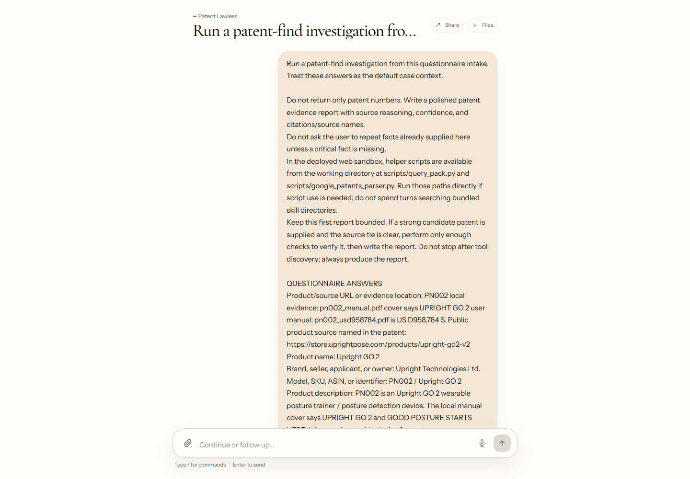

04 / Patent
Patent Search Skill: 从商品风险恢复到 claim/status/evidence matrix
Patent Search 的 harness 让高风险专利能被 recall-first 地找回，同时防止弱相关结果污染法律复核。

跨境卖家需要判断商品是否触发 design/utility patent 风险，最怕漏掉真正高风险专利。
query packs、Google Patents parser、claim/status/evidence matrix、bucket contract 和 answer-blind eval。
约 100 个内部风险样例 top-k recall 从约 10% 到约 90%；指标衡量召回和证据恢复，最终侵权意见仍需律师复核。

1. 为什么做：专利检索同时怕漏召回和乱报高风险
专利风险检索的第一风险是漏掉关键专利，第二风险是把弱相关结果包装成高风险。design patent 依赖外观、图片和整体视觉相似性；utility patent 依赖 claim element、功能结构和法律状态。一个品牌关键词或统一相似度分数无法覆盖这两种判断。
对卖家来说，输出需要超过链接列表。律师或运营需要看到专利号、来源、法律状态、claim/description excerpt、商品特征对照、risk bucket 和为什么需要复核。Patent Search Skill 把检索结果组织成证据矩阵，让复核从结构化材料开始。
2. 怎么做：把搜索策略、parser 和输出 contract 拆开
agent 先从商品材料抽取 brand、visual features、functional elements、marketplace clues 和 patent hypotheses，再生成多组 query pack：品牌、外观、功能、竞品、权利人、平台线索和 Google Patents 语法。这样系统不会在第一批结果里过早收敛。
检索结果先进入 parser 和 matrix。Google Patents parser 提取 claim windows、mechanism terms 和 status 信息；claim_risk_matrix 根据 overlap score、jurisdiction、legal status 和 feature match 给出 HIGH_RISK_REVIEW / RELATED_REVIEW。patent contract 防止分析段落里的背景专利号污染 high-risk bucket。
失败样例会回到 harness。answer-blind runner 不能读答案，先独立完成报告；grader 再检查 high-risk recall、target recall、source support 和 evidence matrix。失败原因可能是 query pack 太窄、source policy 过早停止、parser 漏 claim、ranking helper 压低非品牌 assignee，或者 verifier rubric 没惩罚弱证据。
3. 结果是什么：检索策略可以被测试和回滚
约 100 个内部标注风险样例上，top-k recall 从约 10% 提升到约 90%。这个提升来自 skill/search strategy、source policy、ranking helper、query rewrite 和 verifier rubric 的迭代。
这个数字的边界同样重要。top-k recall 表示目标高风险专利是否进入候选集合和结构化证据矩阵；律师最终侵权判断、jurisdiction 覆盖和公开市场通用准确率不在这个指标里。它证明专利检索 harness 在内部样例上能持续改进。
4. 边界：recall-first 仍要控制噪声
系统必须在 recall 和证据质量之间保持张力。扩大 query pack 可能提高 train recall，却让 heldout 出现大量弱相关专利；过宽的 source policy 可能污染 HIGH_RISK bucket。answer-blind eval、bucket contract 和 heldout review 的作用，就是让 skill 不会靠堆噪声显得更努力。
参考材料
- patent-lawless/web/api/patent-search.js
- patent-lawless/web/lib/patent-contract.js
- patent-lawless/scripts/google_patents_parser.py
- patent-lawless/scripts/claim_risk_matrix.py
- patent-lawless/scripts/score-patent-eval.mjs
- Jiayi Weng, Learning Beyond Gradients, 2026.